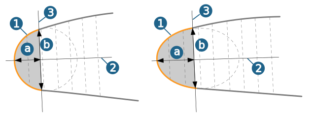

Strategy
Infeed strategy
Spiral: A single, spiral-shaped milling path is created, running around the blade.
Parallel: Separate, closed milling paths are generated.
Infeed mode
Use the To hub / To shroud options to set the infeed direction with respect to the local tool coordinate system. It makes sense to machine from the labile to the stable side.
Reverse rotation
Reverse rotation:
Edge curves
Use the Manually defined boundary option to specify the edge curves in the model.
The option Surface boundary is only available (and should then preferably be used) if exactly four surfaces have been defined under → or → , one each for the pressure and suction side and one each for the leading and trailing edge area.
Automatic: The edge area is delimited from the pressure and suction side via the Length / thickness ratio, so that manual sketching of the curves can be dispensed with even if the data quality is poor.
It is preferable to use automatic curve recognition in the edge area (shown in grey in the graphic) if the blade is not made up of four surfaces, but is made up of any number of surface patches.
The Length (a) and Thickness (b) of the edge area are specified by the Skeleton curve (2) of the blade and a line that runs perpendicular to the skeleton curve (3), see figure: Blade cross section, Edge area. Feasible values for the length/thickness factor lie between 0.5 (radii) and 1 (ellipses).
Figure: Blade cross-section (edge area)
|  |
First cut
Takes into account the remaining rest material after the roughing job in the transition area between blade and side surface. There are several options available for controlling the plunge movement of the tool:
Invert first cut: Top milling of the blade surface takes place using climb milling. This results in conventional milling when plunging the rest material on the side surfaces lying opposite to the machining direction.
The Invert first cut option causes the rest side material machined during the first cut to be machined in climb milling. This results in a smoother machining behavior of the tool and a cleaner surface.
First cut only: Only the first cut is calculated for this option.
This option should be activated in conjunction with the Invert first cut option if the rest material is to be machined separately with one single cut.